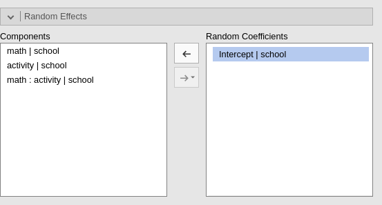

Logistic mixed model in jamovi
keywords jamovi, mixed models, generalized linear models, logistic mixed model, multilevel logist, moderated regression, interactions
In this example we estimate a multilevel logistic regression, with interactions, using jamovi GAMLj module.
One can follow the example by downloading the cvs file and open it in jamovi. Be sure to install the new version of GAMLj module from within jamovi library. Data are simulated for educational purposes, and should be used only for exercising.
The research design
Imagine a study conducted in 70 schools. In each school the same exam
is taken by students of equivalent age and grade. For each student, we
recorded whether the student passed the exam, pass, the
student’s score in math test, math, and the number of
extracurricular activities the student undertook during the
semester.
The researcher wants to estimate the effect of the math test on the probability of passing the exam, and also test whether the amount of extracurricular activities may moderate the math effect.
Each school has a different number of students, ranging from 51 to
100. Each student presents three values: the score in the
math test, the number of activity undertaken
and whether the exam was passed pass=1 or not,
pass=0.
Here are the frequency tables for the pass variable and
an abridged table for the schools variable. frequencies
-> Contingency tables.

…
Understanding the problem
Because the outcome variable, pass, is a dichotomous
one, we need a logistic model (generalized linear model). However, we
have students clustered within schools, thus we need a mixed model
(random intercepts and slopes) to account for clustering dependence. In
other terms, we need to take into the account the multilevel
structure of the data, with students nested within schools.
Mixed logistic model
Let’s start by opening the Generalized Mixed Models
sub-module in GAMLj menu.
Here we can choose which specific model we want to estimate. We can
leave the selected option to Logistic, which is the module
default.

We can now define the variables role in the model, by selecting the
dependent variable pass and the covariates
math and activity. We put the latter ones in
Covariates because they are continuous variables. Notice
that jamovi
recognizes activity as a nominal variable, because it lists
only integer values. GAMLj automatically transforms it into a numerical
variable and uses it as covariate.
The model
We need to specify the model, in terms of fixed effects and random
effects. First, we expand the Fixed Effects tab and include
the interaction into the model terms, by selecting both variables on the
left panel and pushing them on the right.

Then we expand the Random Component tab and fill in the
intercept as random effects across school (we will add random terms
later on, here we start with the intercept as random for the sake of
simplicity).

Results
The first table, Model Info recaps the model call (the
formula used in R), the description of the model (family and link
function), and some overall model index. Here we can look at the
R-squared, for datail see technical
details and R piecewise
package implementation
Based on the R-square indexes, we can see that our error of approximation of the data decreases of 4% ( \({R^2}_{marg}=.039\) ) thanks to the fixed effects, whereas all effects together decrease our error of approximation of 37% (\({R^2}_{cond}=.378\)).
The other information in the table helps to interpret the results. In
particulat, the row Direction is useful. It gives the
definition of the logit that is used, including which is the reference
group of the dependent variable. In the example, it indicates that we
are predicting pass=1 against pass=0. Thus we
know that all the independent variables positively related with the
logit are positively related with the odd of passing the exam.
Random component

For this model, with only intercepts as random coefficients across schools, the random component table is pretty simply. It shows the variance of the random intercepts. It is non-zero, so we are happy.
Omnibus test

The omnibus (Wald) Chi-Squared test tests the main effects of the
independent variables and their interaction. Notice that in GAMLj the
continuous variables are centered to their mean by default, and thus we
can interpret the linear effects of math and
activity as average effects or main
effects . Based on the p-value, our results seem to support an
interaction and two main effects.
Parameter estimates
The same information can be extracted from the parameters estimates table.

Here we also obtain the odd ratio (exp(B)) of the
effects, useful to interpret the effects in terms of rate of change in
the dependent variable odd.
Plots
For generalized linear models, mixed included, a good strategy is to visualize the effects by plotting the predicted values. GAMLj plots the predicted values after transforming them back to the original scale of the dependent variable, in this case probability.
Ask for the plot in the Plots panel. Add
math as the variable whose values go in the
Horizontal axis and activity as
separate lines.

Because activity is a continuous variable, the separated
lines will show the effect of math for three
interesting values of the moderator activity. The
defaul in GAMLj is to show effects for the moderator set at
Mean-1SD, Mean, and Mean+1SD.
This default can be altered in the Covariates scaling
tab.

Thus, for the average level of activity (gray line)
there’s an increase of probability of passing the exam along the scores
of math. The increase, however, is much stronger for
students with one standard deviation above average of activities (yellow
line), whereas for student with a few activities (blue line), the
probability of passing the exam does not change much depending on the
math score (recall the data are simulated, the
interpretation is provided only as an exercise).
We can also visualize the random effects by asking them in the imput panel.


Notice that the random effects depict different curves for different
schools, even though the only random effect is the intercept. This is
not weird in generalized linear models. The random intercept is
estimated for the logit, thus it is the intercept of the straight lines
computed for predicting the logit. When the logit is transformed back to
probabilities, the function relating Y to X is no longer a straight
line, and its shapes changes depending also on the value of the
interecpt. If we wish to appreciate how the random linear
effects vary, we can ask for the Linear Predictor plot,
which plots the effects in the logit scale.

As expected, the random effects are all parallel, because we allowed only the intercepts to be random.
At this point, one can expand the model by allowing also the IVs effects to vary, and evaluate the goodness of the models, comparing them, and further investigate the relationships we observed, with simple effects analysis and additional plots.
Examples
Some worked out practical examples can be found here
Comments?
Got comments, issues or spotted a bug? Please open an issue on GAMLj at github or send me an email